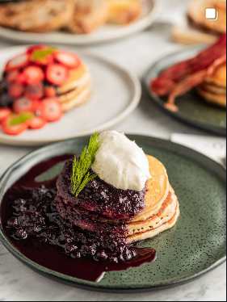
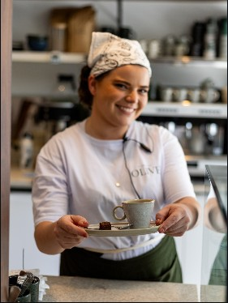
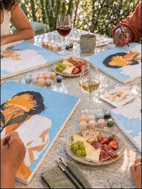

UMA CASA PARA FICAR
O melhor da mesa é compartilhar.
Um café que vira conversa, um brunch sem pressa e bons motivos para sentar junto.
Café · Vinho · Pães · Frios · Eventos

UM BOM COMEÇO DE DIAVIVAbons
momentos
momentos
CASA DA OLIVE · 2026
OLIVE
FLORIPA
FLORIPA
Uma pausa no meio do dia.
Uma mesa que aproxima.
VIVER JUNTO

MESA POSTA PARA COMPARTILHARBONS MOMENTOS ACONTECEM À MESA
Encontros que
pedem mais um pouco.
A Casa da Olive também compartilha eventos e novidades. Acompanhe a programação e fale com a equipe para saber o que vem por aí.
Ver novidades no InstagramA CASA FICA EM SANTA MÔNICA
Chegue com calma.
A mesa espera.
Rua Lúcio Vitorino de Souza, 120
Santa Mônica · Florianópolis/SC
TERÇA A SÁBADO10h às 18hCozinha quente · 10h30 às 17h30
Domingo e segunda · fechado
Domingo e segunda · fechado